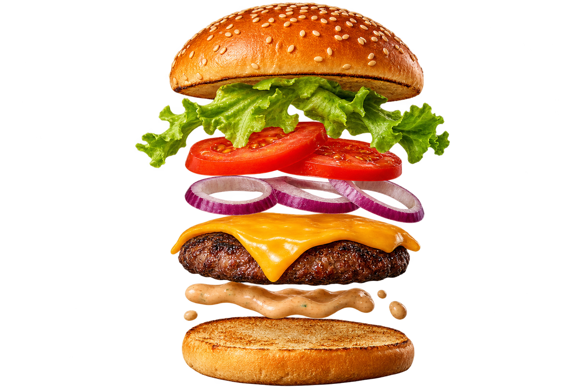

Hamburgare

500g kött ---- En rödlök
4 hamburgerbröd ---- Salladsblad
4 skivor ost ---- Salt & svartpeppar
En tomat ---- Smör och olja
1 dl majonnäs
2 msk ketchup
1 tsk senap
Hamburgaren är en populär maträtt som vanligtvis består av en stekt eller grillad köttfärsbiff som serveras i ett bröd tillsammans med olika tillbehör, exempelvis sallad, tomat, ost, lök och dressing. Den har sitt ursprung i maträtten Hamburgstek från den tyska staden Hamburg, men utvecklades till den moderna hamburgaren i USA. Idag finns hamburgare i många olika varianter, med allt från klassiskt nötkött till kyckling och vegetariska eller veganska alternativ. 🍔
1. Förbered köttet: Dela nötfärsen i fyra lika stora delar och forma dem till hamburgarbiffar. Krydda med salt och svartpeppar.
2. Stek hamburgarna: Hetta upp en stekpanna med lite smör eller olja. Stek biffarna tills de fått fin färg och är genomstekta.
3. Lägg på osten: Lägg en skiva cheddarost på varje hamburgare mot slutet av stekningen så att osten smälter.
4. Förbered tillbehören: Skiva tomat och rödlök. Skölj salladsbladen.
5. Gör dressingen: Blanda majonnäs, ketchup och senap i en liten skål.
6. Rosta bröden: Värm hamburgerbröden lätt i en stekpanna eller ugn.
7. Bygg hamburgarna: Bred dressing på bröden och lägg på sallad, hamburgarbiff, tomat och rödlök. Lägg på överdelen av brödet.
